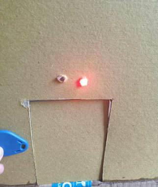

Sistem yang diusulkan bertujuan untuk memberikan solusi sederhana dan efektif untuk mengatasi masalah masuknya orang yang tidak berwenang. Arduino Otomatic Pin Control Board berbasis RFID merupakan teknologi sensor-inframerah yang dirancang untuk memungkinkan individu memasuki suatu lokasi. Papan tersebut dirancang secara otomatik, memungkinkan individu yang sudah memasuki area tersebut dapat masuk dan yang belum memasukkan identitasnya dapat masuk. Rentang RFID terdiri dari Tag dan Reader, digunakan untuk menangkap informasi tentang identitas seseorang dan perangkat lunak untuk pengumpulan data. Penempatan tag sebaiknya berada dalam jarak 1cm dari pembaca, dengan tingkat keberhasilan 100%.
RFID reader MFRC 522 telah berhasil membaca RFID Tag dengan jarak maksimal 1 cm. Proses identifikasi RFID Tag menggunakan sensor telah memenuhi harapan, memberikan keamanan pada pintu berbasis pengenalan kunci RFID.
LED merah menyala ketika verifikasi RFID Tag gagal, memberikan sinyal visual tentang adanya kesalahan. Sistem telah dirancang untuk menghindari akses yang tidak sah, meningkatkan keamanan pintu
Sistem keamanan keamanan pintu pintar dirancang dan dibangun menggunakan Sensor RFID-RC522 berbasis Arduino Uno yang dalam pemrogramannya menggunakan Software Arduino IDE. Komponen elektromagnetik (RFID Tag) sebagai pengunci pintu. Komponen RFID sebagai pembaca RFID Tag. Komponen LED dan Buzzer memberikan informasi berupa cahaya LED dan suara. Sistem keamanan pintu menggunakan RFID dibuat dan dioperasikan menggunakan mikrokontroler. Arduino Uno sebagai pusat kendali rangkaian dan diprogram menggunakan software Arduino IDE. Sistem ini menggunakan Sensor RFID yang mampu membaca RFID Tag pada jarak maksimal 1 cm. Pengujian sistem ini dilakukan dengan menempelkan RFID Tag lalu diverifikasi, jika salah maka LED merah akan menyala serta buzer akan berbunyi panjang dan pintu tetap terkunci, sedangkan jika RFID Tag yang di tempelkan benar maka ketika selesai diverifikasi LED kuning akan menyala serta buzer akan berbunyi 2 kali dan kunci terbuka.